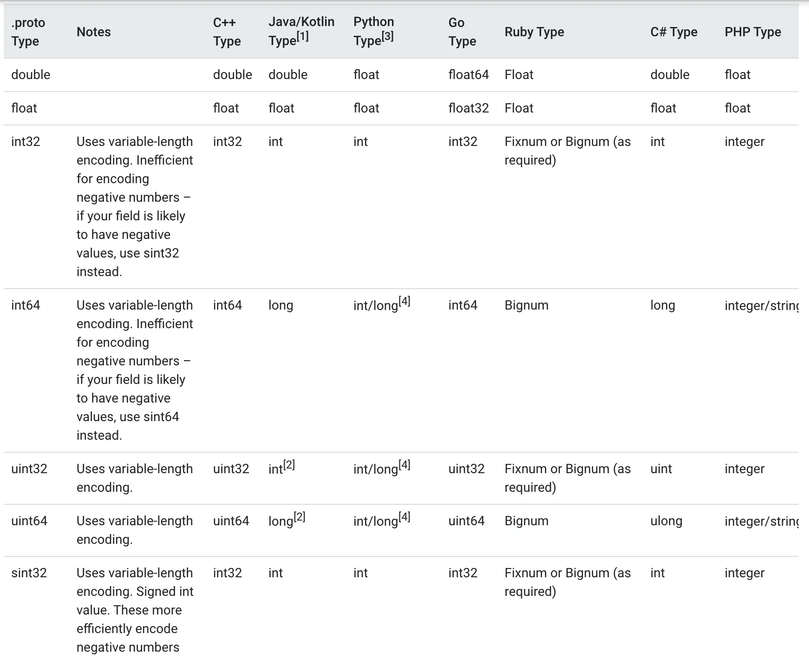
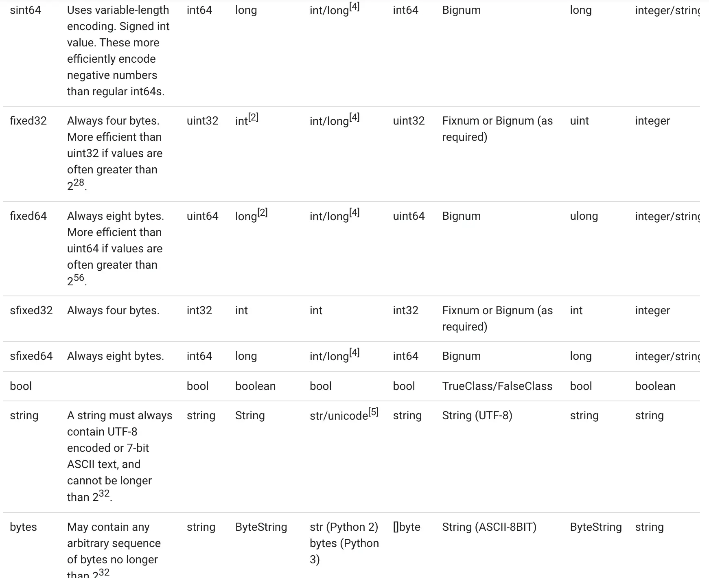
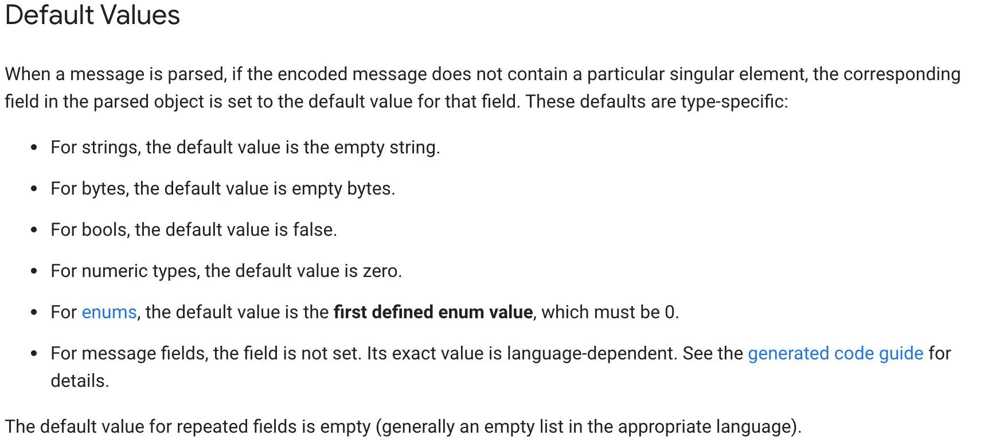

#mac系统中采用brew,很可能已安装过
brew list | grep protobuf
brew info protobuf
protoc --proto_path=IMPORT_PATH \
--cpp_out=DST_DIR \
--java_out=DST_DIR \
--python_out=DST_DIR \
--go_out=DST_DIR \
--ruby_out=DST_DIR \
--objc_out=DST_DIR \
--csharp_out=DST_DIR \
path/to/file.proto
#--go_out表示启动protoc-gen-go插件
#proto文件和本脚本在同一目录,执行前要cd到本目录,防止出现各种相对路径找不到
#Could not make proto path relative: *.proto: No such file or directory
protoc --cpp_out=../cpp --python_out=../python --go_out=../event *.proto
#--go-grpc_out表示启动protoc-gen-go-grpc插件
protoc --go_out=../event --go-grpc_out=../event *.proto
syntax = "proto3";
option go_package = "./;event";
import "person.proto";
service User {
rpc Reg(Person)returns(Person){}
}
syntax = "proto3";
package example;
//protoc-gen-go The import path must contain at least one period ('.') or forward slash ('/') character.
//https://developers.google.com/protocol-buffers/docs/reference/go-generated
//表示直接生成文件到go_out目录
option go_package = "./;event";
//vscode中vscode-proto3插件import提示无法找到other.proto
//vscode直接打开other.proto所在目录,不要打开父目录
import "other.proto";
//单行注释
message Person {
string name = 1;
int32 id = 2;
repeated string emails = 3;
map<string, int32> dict = 4;
repeated Order orders = 5;
}
/*
多行注释
*/
message SearchResponse {
message Result {
string url = 1;
string title = 2;
repeated string snippets = 3;
}
repeated Result results = 1;
}
syntax = "proto3";
package example;
option go_package = "./;event";
message Order {
int64 id = 1;
uint64 date = 2;
string customer = 3;
double price = 4;
string goods = 5;
string remark = 6;
}
  